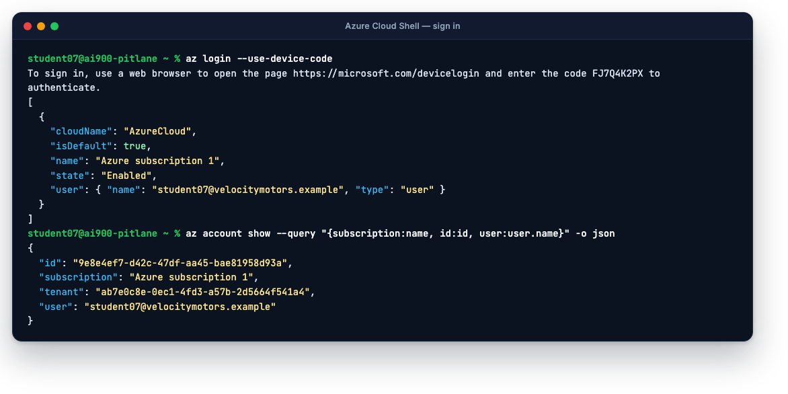
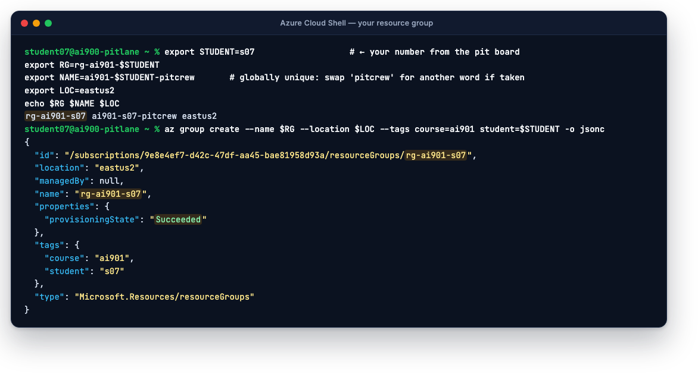
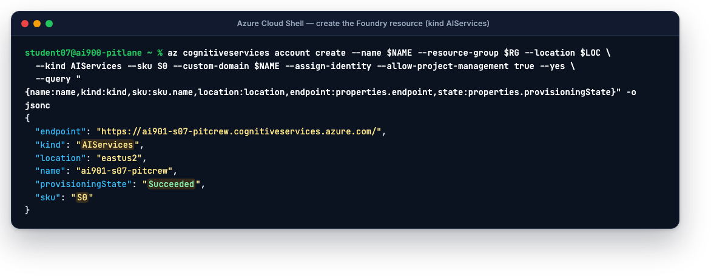
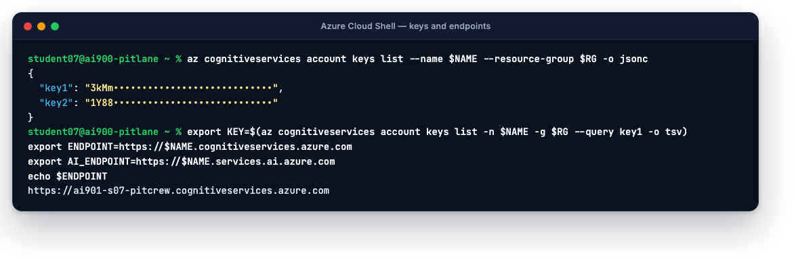
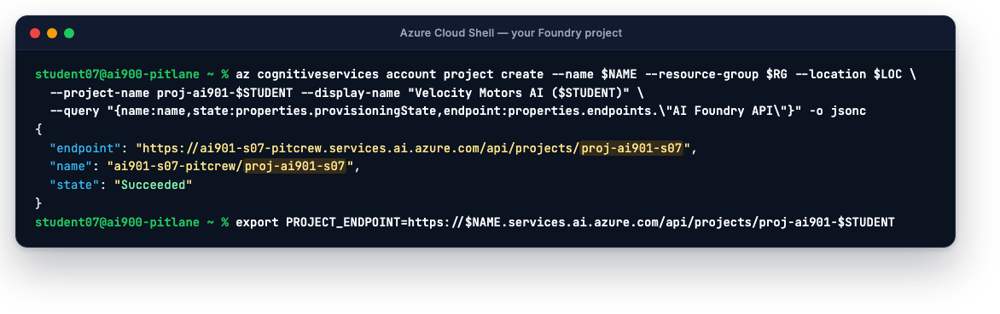
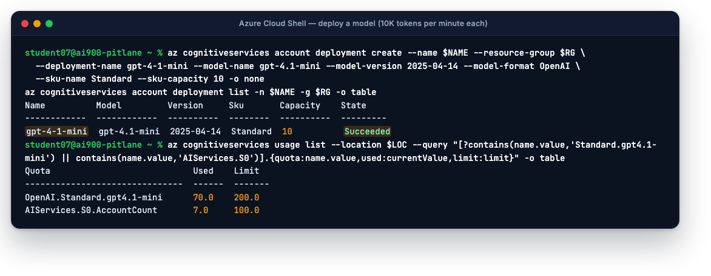
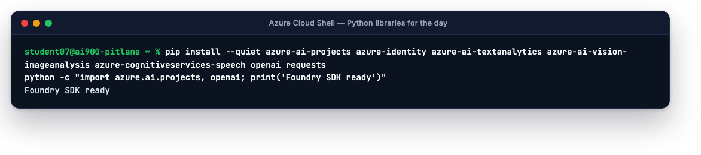
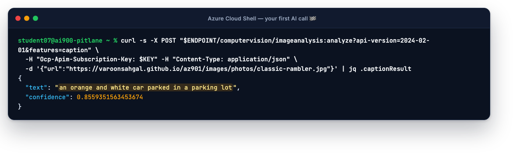

On this page
Welcome to Velocity Motors. Sales wants a chatbot, Service wants invoices read automatically, Marketing wants concept-car art by lunchtime and Legal wants to know what "responsible AI" means before anyone ships anything. You are the new AI pit crew. Today you prove all of it is possible in one day, in one Azure subscription, without stepping on the other nineteen crews doing the same thing beside you.
Find your student number on the whiteboard (s01 to s20). Type it into the Pit board box in the top bar of this site. Every command on every page will rewrite itself with your number, like this: rg-ai901-s07. Twenty people share this subscription; your number is what keeps your resources yours.
Part 0 · The idea in five minutes
Azure AI is sold as dozens of services with dozens of names, and Microsoft renames them regularly. For the exam and for today you need exactly five nouns.
Microsoft.CognitiveServices/accounts with kind AIServices. One resource gives you OpenAI models, Language, Speech, Vision, Content Safety and Content Understanding from one endpoint and one key. The prebuilt tools are now called Foundry Tools (formerly Azure AI services, formerly Cognitive Services).gpt-4.1-mini); a deployment is your running copy of it with a name you choose, a deployment type and a capacity in tokens per minute (TPM). Code always calls the deployment name, never the model name.az login) plus a role such as Azure AI User. The Foundry SDK and agents use Entra ID; the classic tools accept either.Deployment types, in one table
| Type | Where it runs | Pick it when |
|---|---|---|
| Standard | Your resource's region only | Data must stay in-region; low to medium traffic. Today's choice for gpt-4.1-mini. |
| Global Standard | Routed to any Azure region with capacity | Best availability and newest models; data residency is not a constraint. Needed for gpt-audio-mini and FLUX. |
| Data Zone Standard | Within a geography (EU or US) | A middle ground: more capacity than Standard, still inside a legal boundary. |
| Provisioned (PTU) | Reserved throughput you pay for hourly | Predictable latency at high volume. Never for a lab. |
| Batch | Asynchronous, 24-hour window | Millions of non-urgent requests at about half price. |
Expect questions like "a dealership must keep customer data in the United States; which deployment type?" (Data Zone or Standard) or "what does TPM limit?" (tokens per minute per deployment, drawn from a per-region quota). Capacity is set per deployment; quota is shared per model per region per subscription, which is exactly why twenty of us deploy small.
Part 1 · Open Cloud Shell
Open portal.azure.com and sign in with the account the instructor gave you. In the top bar click the Cloud Shell icon (
>_), or go straight to shell.azure.com.Choose Bash. If asked about storage, pick No storage account required (ephemeral). Nothing today needs files to survive between sessions; the pit-board block below rebuilds your variables in two seconds.
Confirm you are in the right subscription. You are already signed in inside Cloud Shell, so
az loginis only needed on your own laptop.az account show --query "{subscription:name, id:id, user:user.name}" -o json
Part 2 · Your pit board variables
Paste this block at the start of every lab (and every new Cloud Shell session). It defines the names everything else uses. The values already contain your number if you set the pit board above.
export STUDENT=s07 # your number from the whiteboard
export RG=rg-ai901-$STUDENT # your resource group
export NAME=ai901-$STUDENT-pitcrew # your Foundry resource · must be unique worldwide
export LOC=eastus2 # everyone uses East US 2 today
export PROJECT=proj-ai901-$STUDENT # your Foundry project
echo $RG $NAME $LOC $PROJECTThe resource name becomes a DNS name, so it must be unique across all of Azure. ai901-s07-pitcrew will be free unless another Velocity crew used it; if creation says the name is taken, change pitcrew to anything else and re-export NAME. Keep the ai901-s07- prefix so the instructor can find it.
Part 3 · Build the garage
Resource group. A folder for everything you build. Tags let race control find and cost every student's work.
az group create --name $RG --location $LOC --tags course=ai901 student=$STUDENT -o jsonc
The Foundry resource. One command, four decisions: kind
AIServices(the multi-service kind), SKUS0(pay-per-use; never F0 in a shared subscription), a custom domain equal to the name (that is what gives you a private endpoint URL), and--allow-project-managementso Foundry projects can live inside it. It takes about a minute.az cognitiveservices account create --name $NAME --resource-group $RG --location $LOC \ --kind AIServices --sku S0 --custom-domain $NAME --assign-identity --allow-project-management true --yes \ --query "{name:name,kind:kind,sku:sku.name,location:location,endpoint:properties.endpoint,state:properties.provisioningState}" -o jsonc
Keys and endpoints. Two keys exist so you can rotate one while the other keeps working. Put them in variables; never paste them into chat, slides or Git.
az cognitiveservices account keys list --name $NAME --resource-group $RG -o jsonc export KEY=$(az cognitiveservices account keys list -n $NAME -g $RG --query key1 -o tsv) export ENDPOINT=https://$NAME.cognitiveservices.azure.com # Vision · Language · Speech · Content Safety export AI_ENDPOINT=https://$NAME.services.ai.azure.com # Foundry API · agents · Content Understanding export AOAI_ENDPOINT=https://$NAME.openai.azure.com # OpenAI models · images · audio echo $ENDPOINT
The project. This is what the Foundry portal and SDK connect to.
az cognitiveservices account project create --name $NAME --resource-group $RG --location $LOC \ --project-name $PROJECT --display-name "Velocity Motors AI ($STUDENT)" \ --query "{name:name,state:properties.provisioningState,endpoint:properties.endpoints.\"AI Foundry API\"}" -o jsonc export PROJECT_ENDPOINT=$AI_ENDPOINT/api/projects/$PROJECT
Deploy a model.
gpt-4.1-miniis cheap, fast, understands images and (unlike the gpt-5 family) still lets you settemperature, which Lap 2 needs. Capacity 10 means 10,000 tokens per minute: plenty for one person, and twenty of them fit in the regional quota of 200K.az cognitiveservices account deployment create --name $NAME --resource-group $RG \ --deployment-name gpt-4-1-mini --model-name gpt-4.1-mini --model-version 2025-04-14 --model-format OpenAI \ --sku-name Standard --sku-capacity 10 -o none az cognitiveservices account deployment list -n $NAME -g $RG -o table
Python libraries for the lightweight apps you will run later. Cloud Shell already has Python 3; this takes about a minute.
pip install --quiet azure-ai-projects azure-identity azure-ai-textanalytics azure-ai-vision-imageanalysis azure-cognitiveservices-speech openai requests python -c "import azure.ai.projects, openai; print('Foundry SDK ready')"
The same four objects, built with clicks. Do this path at least once: the exam asks about the portal.
Open ai.azure.com and sign in. In the top toolbar make sure New Foundry is switched on (the older experience looks different and does not have the agent features we use later).
Select Create new (or you are prompted to create a project). Name the project
proj-ai901-s07. Expand Advanced options and set: Foundry resourceai901-s07-pitcrew; Subscription the shared one; Resource group createrg-ai901-s07; Region East US 2. If the wizard offers to "set up recommended resources", clear it. Select Create and wait a minute or two.On the project Home page, find the Project endpoint (ends in
/api/projects/proj-ai901-s07) and the key. Note the endpoint; the Python labs use it.Go to Discover → Models. Search
gpt-4.1-mini, open it, select Deploy. Keep the namegpt-4-1-mini, deployment type Standard, and set the tokens-per-minute slider to 10K. Select Deploy. The playground opens when it is ready.In the playground's Chat pane type
Who are you, and what can you do for a car dealership?and read the answer. Congratulations: that is your first model call. Lap 2 lives here.
Microsoft redraws Foundry often. The nouns do not change: a project inside a resource, a deployment of a model, a playground to try it. If you cannot find something, switch to the Cloud Shell tab; those commands are exact and were run to make the screenshots on this page.
Part 4 · Your first AI call
Prove the garage works with one HTTP request to Azure AI Vision, asking it to caption a photo from this site. No SDK, no Python, just curl: this is the shape of every Foundry Tool call you will see today (an endpoint, an API version, your key in a header, JSON back).
curl -s -X POST "$ENDPOINT/computervision/imageanalysis:analyze?api-version=2024-02-01&features=caption" \
-H "Ocp-Apim-Subscription-Key: $KEY" -H "Content-Type: application/json" \
-d '{"url":"https://varoonsahgal.github.io/az901/images/photos/classic-rambler.jpg"}' | jq .captionResult

You should now have: a resource group rg-ai901-s07; inside it a Foundry resource ai901-s07-pitcrew with one project and one deployment; variables KEY, ENDPOINT, AI_ENDPOINT, AOAI_ENDPOINT, PROJECT_ENDPOINT set in your shell; and a caption for a 1958 Rambler. Open portal.azure.com → Resource groups → yours, and look at the two resources. Then ai.azure.com should show your project. If both are true, you are out of the pit lane.
Troubleshooting
"The name is already taken" or "AccountAlreadyExists"
Someone in the world already owns that DNS name. Change the last word: export NAME=ai901-$STUDENT-garage (or turbo, your surname…) and re-run from the resource step. Keep the prefix.
"InsufficientQuota" when deploying the model
The regional pool for that model is used up. Check with az cognitiveservices usage list --location $LOC -o table | grep -i gpt4.1-mini. Ask race control; the fix is to lower a capacity somewhere or deploy gpt-4o-mini instead (same commands, model name gpt-4o-mini, version 2024-07-18).
"AuthorizationFailed" or the portal says you cannot create a project
Your account needs Contributor on the subscription (to create resources) and Azure AI User or Azure AI Developer on the resource (to use the project and agents). Race control grants both; see the instructor page. The error message names the role it wanted.
Cloud Shell forgot my variables
Every new Cloud Shell session starts clean. Paste the Part 2 block again, then the three export lines from the keys step. Thirty seconds. This is normal.
I created everything in East US instead of East US 2
It will mostly work, but two models we use later (gpt-audio-mini and FLUX) only have quota in East US 2 on this subscription. Delete and recreate: az group delete -n $RG --yes, then set LOC=eastus2 and start Part 3 again. Five minutes.
Quick quiz
A dealership needs a model deployment whose data never leaves the United States, with more capacity than one region offers. Which deployment type?
Data Zone Standard. Standard stays in one region; Global Standard can route anywhere in the world; Data Zone stays within a geography (US or EU). Provisioned is about reserved throughput, not residency.
What is the difference between gpt-4.1-mini and gpt-4-1-mini in this lab?
The first is the model in the catalog. The second is your deployment of it; its name is yours to choose and it is what code and the playground call. Many people name them the same; we used a hyphen so you can see the difference.
Why does the course forbid the free F0 tier?
Azure allows only one F0 resource per service kind per subscription. In a shared subscription the first student would get it and the other nineteen would fail. S0 is pay-per-use and costs cents for a day of lab traffic.
Which authentication does the Foundry SDK use when you call AIProjectClient(endpoint, DefaultAzureCredential())?
Microsoft Entra ID: your signed-in identity plus a role on the resource. No key appears in the code. Keys are still accepted by the classic tool endpoints (Vision, Language, Speech) and we use them there for simplicity.
Pit wall debrief · what you learned
- Microsoft Foundry is the platform; a Foundry resource (kind AIServices) bills and secures it; a project is where you work; a deployment is your copy of a model with a name and a TPM capacity.
- Deployment types trade residency against capacity: Standard, Data Zone, Global Standard, Provisioned, Batch.
- One resource, one key, three host names. Keys authenticate the resource; Entra ID authenticates you.
- In a shared subscription, your student number is your namespace, S0 beats F0, and small deployments keep everyone under quota.
Next: before we build anything clever, we agree on the rules of the road. Lap 1 · Race rules →